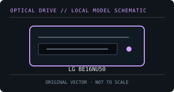

[ OPTICAL DRIVES // IDENTIFIED EXTERNAL MODEL ]
LG BE16NU50
LG external 16× BDXL writer; its product sheet specifies layer-dependent Blu-ray write speeds and separate USB data/power connections.

IDENTIFICATION: Match the exact label and suffix to manufacturer documentation. Ratings are maximums under supported-media conditions, not guaranteed sustained speeds.
Model-specific specifications
| Catalog subcategory | External Blu-ray drives |
|---|---|
| Exact model / SKU | LG BE16NU50 |
| BD formats and read rates | BD-ROM, BD-R SL/DL/TL/QL, BD-RE SL/DL/TL, BDXL and M-DISC BD-R. Read: BD-ROM / BD-R up to 12×; BD-RE up to 10× (layer dependent). |
| BD write formats and rates | BD-R SL 16×, DL 12×, TL 8×, QL 6×; BD-RE up to 2×; M-DISC BD-R up to 4×. |
| DVD formats and read rates | DVD-ROM, DVD±R, DVD±R DL, DVD±RW, DVD-RAM and DVD+R M-DISC. Read: DVD-ROM / DVD±R up to 16×; DVD±RW up to 12×; DVD-RAM 5×. |
| DVD write formats and rates | DVD±R up to 16×; DVD±R DL 8×; DVD+RW 8×; DVD-RW 6×; DVD-RAM 5×; M-DISC DVD+R up to 4×. |
| CD formats and read rates | CD-ROM, CD-R and CD-RW. Read: CD-ROM/CD-R up to 48×; CD-RW up to 40×. |
| CD write formats and rates | CD-R up to 48×; CD-RW up to 24×. |
| USB interface and power | USB 3.0 external data interface (USB 2.0 compatible); the full-size drive requires the included external DC power adapter. |
| Host compatibility and software | Drive data operation is supported on Windows and Mac OS; included CyberLink utilities are Windows-specific. Blu-ray movie playback uses separately licensed software and a compatible protected-video path. |
| Model caveat | The maximum 16× rating applies to compatible single-layer BD-R; BDXL TL/QL, BD-RE and M-DISC have lower ceilings. |
Host, media and preservation notes
- Separate drive-level disc support from playback application, region policy, codec licensing and any protected-video/HDCP requirements.
- Use supported media and a stable data/power connection; firmware, media quality, layer, recording mode and USB bandwidth affect actual speed.
- For an archival image, log drive model/firmware, host OS, software, media type, verification result and checksums.
Manufacturer and manual sources
- LG — BE16NU50 product support and manualsManufacturer product support page and model-specific documentation locator.
- LG — BE16NU50 specification sheet (PDF)Manufacturer speed and supported-format specification sheet.
Published X-speed ratings are maximum format-specific rates. Actual operation depends on supported media, software, host throughput and operating conditions.